A Note from Mary Pope Osborne
A1When I write Magic Tree House® adventures, I love including facts about the times and places Jack and Annie visit. 2But when readers finish these adventures, I want them to learn even more. 3So that’s why we write a series of nonfiction books that are companions to the fiction titles in the Magic Tree House® series. 4We call these books Fact Trackers because we love to track the facts! 5Whether we’re researching dinosaurs, pyramids, Pilgrims, sea monsters, or cobras, we’re always amazed at how wondrous and surprising the real world is. 6We want you to experience the same wonder we do—so get out your pencils and notebooks and hit the trail with us. 7You can be a Magic Tree House® Fact Tracker, too!
B8Mary Pope Osborne [signature]
원본 펼침면 확인 · 002–003쪽
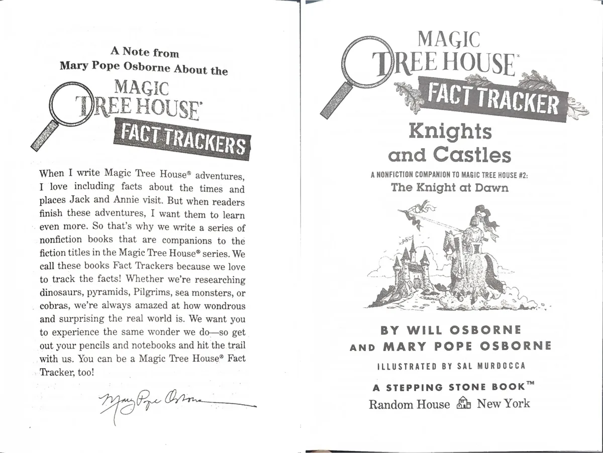
Dear Readers
A1Dear Readers, 2Our adventures in the magic tree house always make us want to know more about the places we visit. 3When we got back from the time of knights and castles in The Knight at Dawn, we wanted to know more about dungeons. 4We wanted to know more about armor. 5We wanted to know more about what goes on inside a castle.
B6To find out, we had to be fact trackers! 7We went to the library. 8We found pictures of famous castles in the encyclopedia. 9We checked out books about the Middle Ages. 10The librarian helped us track facts about
원본 펼침면 확인 · 010–011쪽
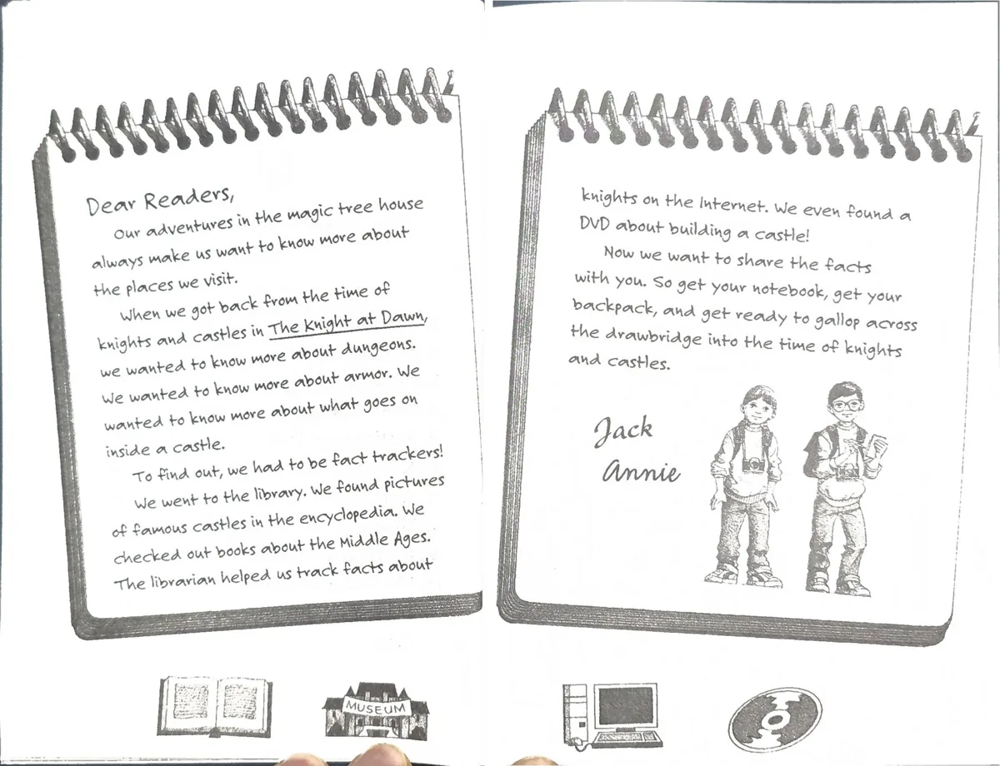
C11knights on the Internet. 12We even found a DVD about building a castle! 13Now we want to share the facts with you. 14So get your notebook, get your backpack, and get ready to gallop across the drawbridge into the time of knights and castles.
D15Jack 16Annie
The Middle Ages
A1Imagine that it takes twenty years to build your house. 2You need thousands of workers to build it. 3You need hundreds of servants to run it. 4You need a small army of armored men to protect it.
B5Welcome to the time of knights and castles.
C6We often read about make-believe castles in fairy tales and legends. 7The real castles that are most like the 8ones in fairy tales were built in Europe during the Middle Ages. 9The Middle Ages began about 450 A.D. They lasted for over 1,000 years. 10This period of history is called the Middle Ages because it was between ancient times and modern times. 11It is sometimes also called the medieval era. 12Medieval is Latin for “middle age.”
D13The Middle Ages were a time of great change in Europe. 14More people learned to read and write. 15The first universities were built. 16New kinds of painting and poetry were created. 17The Middle Ages were also a time of war and fighting. 18People fought with each other about religion. 19They fought about who should marry who. 20Mostly, they fought about land.
E21Jack: Eyeglasses were invented in the Middle Ages!

F22Annie: A university is a school of higher learning.
원본 펼침면 확인 · 014–015쪽
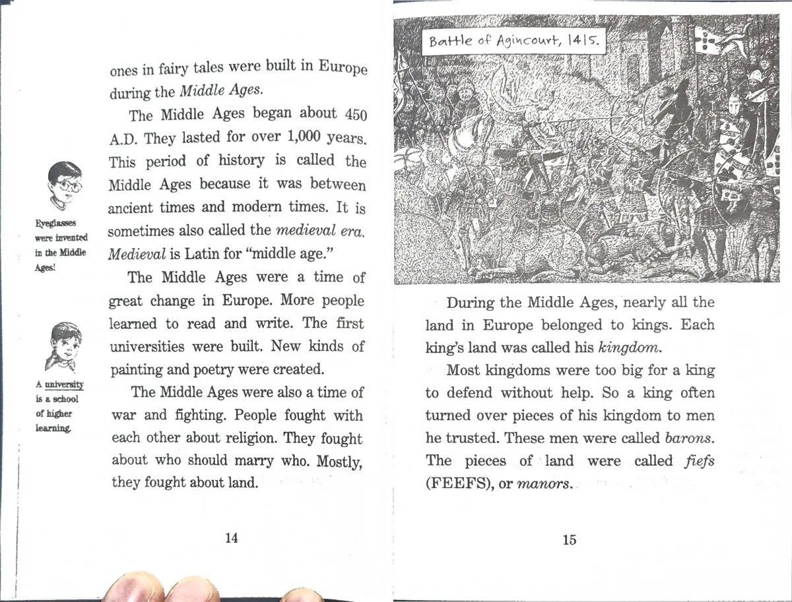

G23During the Middle Ages, nearly all the land in Europe belonged to kings. 24Each king’s land was called his kingdom. 25Most kingdoms were too big for a king to defend without help. 26So a king often turned over pieces of his kingdom to men he trusted. 27These men were called barons. 28The pieces of land were called fiefs (FEEFS), or manors.
H29A baron didn’t own his manor. 30But he ruled over all the people who lived and worked there. 31And he could build a castle on the manor for himself and his family. 32In return, a baron swore allegiance to the king. 33That meant he was willing to die to protect the king and the kingdom.
I34The baron also promised to send soldiers to fight for the kingdom if it were attacked. 35These soldiers were called knights. 36Knights swore allegiance to the king and the baron. 37In return, knights were often given their own manors to rule over.
J38Most of the people who actually worked on the land were called serfs (SURFS). 39Serfs didn’t rule over anyone.
K40Jack: Some manors were very large. 41They could include several villages and many farms.

L42Annie: Not all knights got their own manors. 43Some lived in a lord’s castle.
원본 펼침면 확인 · 016–017쪽
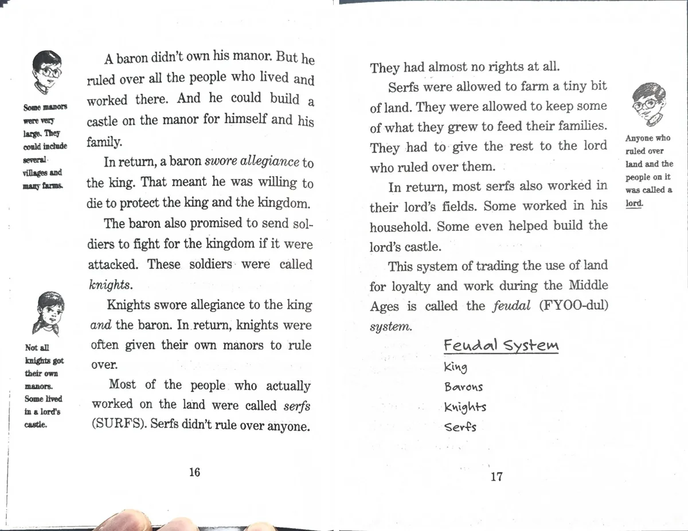

M44They had almost no rights at all. 45Serfs were allowed to farm a tiny bit of land. 46They were allowed to keep some of what they grew to feed their families. 47They had to give the rest to the lord who ruled over them.
N48In return, most serfs also worked in their lord’s fields. 49Some worked in his household. 50Some even helped build the lord’s castle. 51This system of trading the use of land for loyalty and work during the Middle Ages is called the feudal (FYOO-dul) system.


O52Jack: Anyone who ruled over land and the people on it was called a lord.

P53In the Middle Ages, most rich people were nobles. 54Nobles came from families that had been wealthy for a long time. 55Noble women were called ladies. 56They could also have titles, such as baroness, duchess, or countess.
Q57Noble men sometimes had titles such as baron, duke, or count.
원본 펼침면 확인 · 018–019쪽
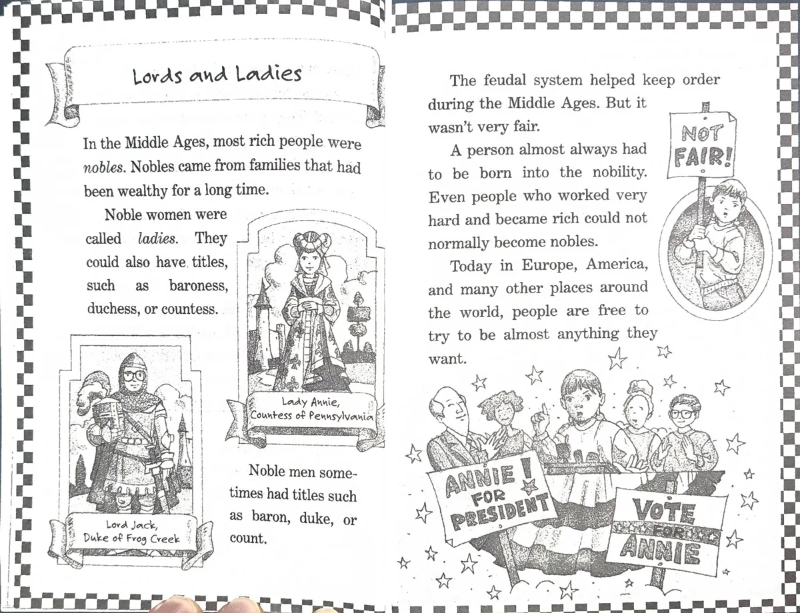
R58The feudal system helped keep order during the Middle Ages. 59But it wasn’t very fair. 60A person almost always had to be born into the nobility. 61Even people who worked very hard and became rich could not normally become nobles.
S62Today in Europe, America, and many other places around the world, people are free to try to be almost anything they want.
The Age of Castles
A1Castles were an important part of the feudal system. 2They were built to protect lords and their land from enemy attackers. 3Nobody knows exactly when the first castle was built. 4But the busiest time for castle building in Europe began about 1050 and lasted until the end of the Middle Ages.
B5So many castles were built during
C6Annie: The word castle comes from the Latin word castellum, which means “fortress.” 7this period that historians sometimes call it “The Age of Castles.” 8By the end of the Age of Castles, there were over 12,000 castles in Europe.
D9The First Castles 10The first castles looked more like forts in the Old West than castles in fairy tales. 11They were built out of wood. 12These castles were usually built on a mound of earth called a motte (MAHT). 13They had a tower called a keep, a yard called a bailey, and a tall fence called a palisade (PAL-uh-sade).
E14Jack: A historian is someone who studies and writes about history.
원본 펼침면 확인 · 022–023쪽
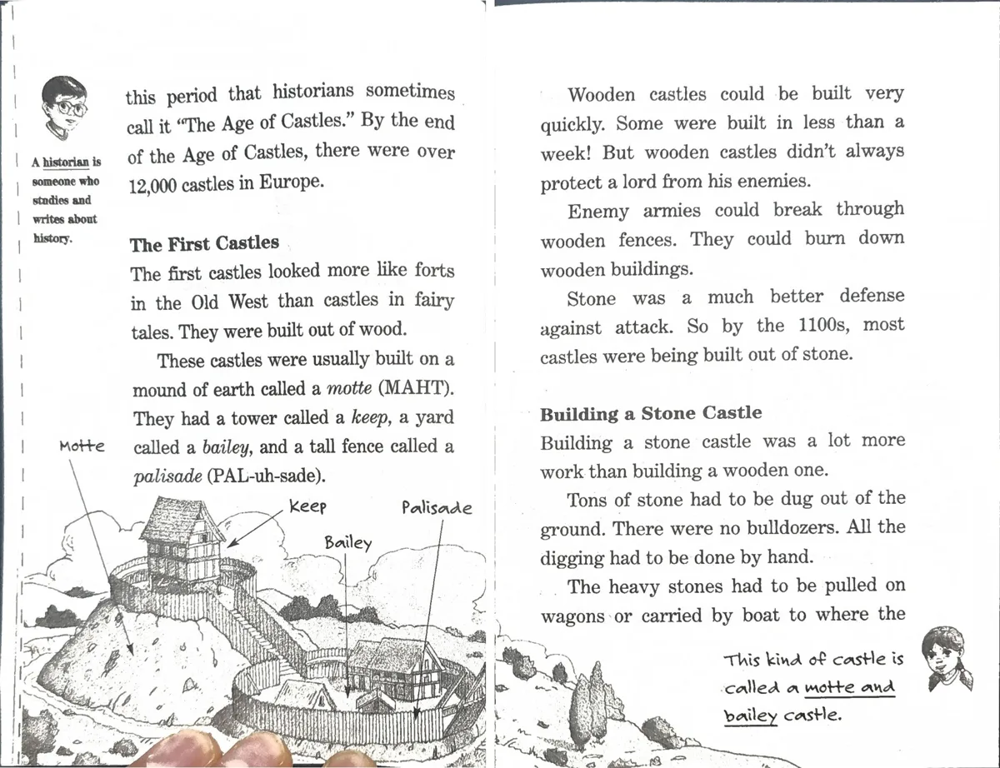
F15Wooden castles could be built very quickly. 16Some were built in less than a week! 17But wooden castles didn’t always protect a lord from his enemies. 18Enemy armies could break through wooden fences. 19They could burn down wooden buildings.
G20Stone was a much better defense against attack. 21So by the 1100s, most castles were being built out of stone. 22Building a Stone Castle 23Building a stone castle was a lot more work than building a wooden one. 24Tons of stone had to be dug out of the ground. 25There were no bulldozers. 26All the digging had to be done by hand.
H27The heavy stones had to be pulled on wagons or carried by boat to where the
I28Annie: This kind of castle is called a motte and bailey castle. 29castle was being built. 30Loading and unloading the boats and wagons was a huge job.
J31The actual stonework on the castle was done by men called masons. 32A master mason worked with the lord to plan the castle. 33He also made sure all the other castle builders did a good job.
원본 펼침면 확인 · 024–025쪽
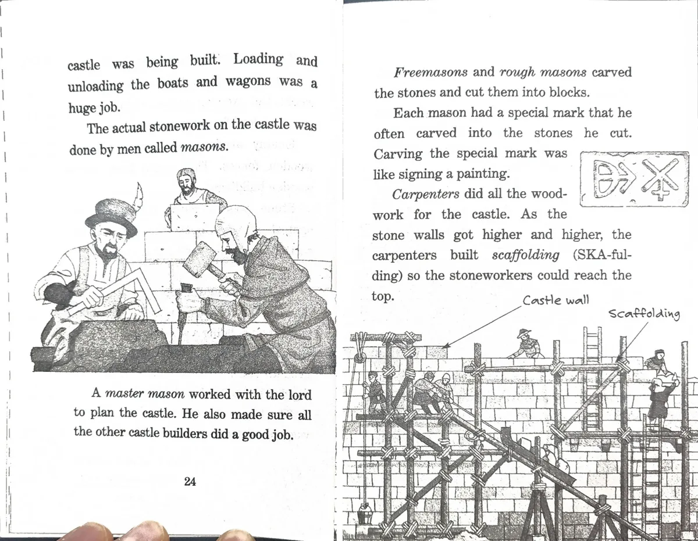
K34Freemasons and rough masons carved the stones and cut them into blocks. 35Each mason had a special mark that he often carved into the stones he cut. 36Carving the special mark was like signing a painting.
L37Carpenters did all the woodwork for the castle. 38As the stone walls got higher and higher, the carpenters built scaffolding (SKA-ful-ding) so the stoneworkers could reach the top.

M39Nails and tools were made by blacksmiths. 40Blacksmiths also fixed broken tools. 41They stayed busy because tools broke a lot. 42The master masons, carpenters, and blacksmiths who worked on a castle were all master craftsmen. 43They had spent many years learning to do their jobs well.
원본 펼침면 확인 · 026–027쪽
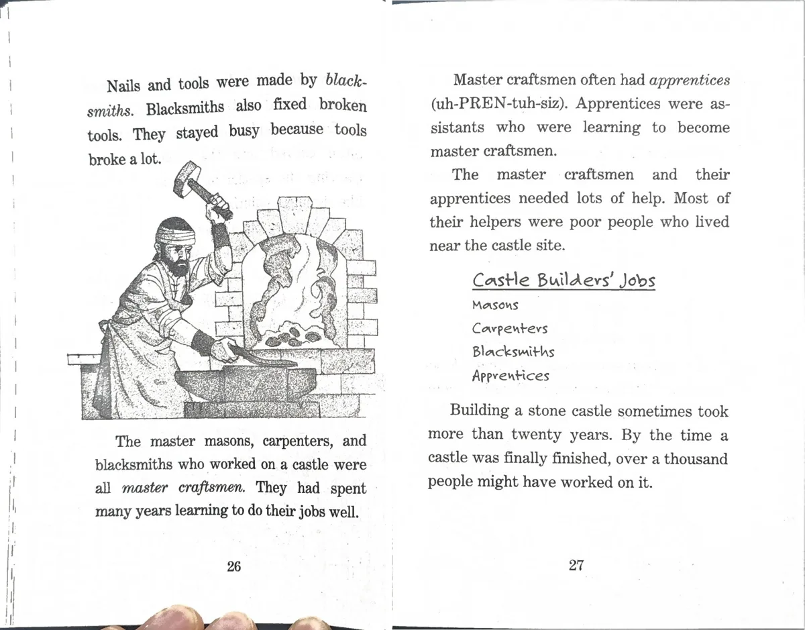

N44Master craftsmen often had apprentices (uh-PREN-tuh-siz). 45Apprentices were assistants who were learning to become master craftsmen. 46The master craftsmen and their apprentices needed lots of help. 47Most of their helpers were poor people who lived near the castle site.
O48Building a stone castle sometimes took more than twenty years. 49By the time a castle was finally finished, over a thousand people might have worked on it. 501. 51Become an apprentice to a master craftsman. 52Run errands and work without pay. 53Learn skills.
P542. 55After about seven years, become a journeyman (JUR-nee-mun). 56Practice your skills. 57Work for low pay.
원본 펼침면 확인 · 028–029쪽
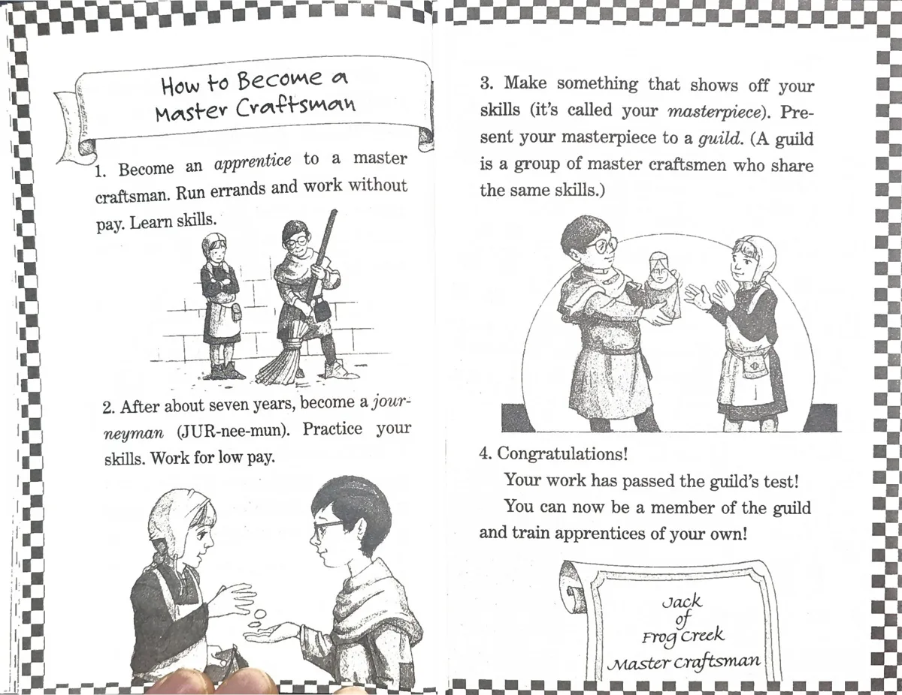
Q583. 59Make something that shows off your skills (it’s called your masterpiece). 60Present your masterpiece to a guild. 61(A guild is a group of master craftsmen who share the same skills.)
R624. 63Congratulations!
S64Your work has passed the guild’s test! 65You can now be a member of the guild and train apprentices of your own!
Protecting the Castle
A1It took a lot longer to build a stone castle than a wooden one. 2It also cost much more. 3Most lords thought stone castles were worth the extra time and money. 4When a stone castle was complete, it was very hard for an enemy to get inside.
B5Stone castles often had towers that reached high above the walls. 6There were watchmen in the towers. 7When the watchmen saw an enemy coming, they blew horns to sound an alarm. 8Sentries (SEN-treez) with bows and arrows stood guard along the tops of all the castle walls. 9The sentries were protected by stone battlements (BAT-ul-munts). 10Battlements had gaps called crenels (KREN-ulz) and solid places called merlons (MUR-lunz).
C11When the sentries heard the watchmen’s alarm, they could shoot arrows at the enemy through the crenels. 12If the enemy shot back, the sentries could duck behind the merlons.
D13Jack: A sentry is a soldier who keeps watch for enemies.
원본 펼침면 확인 · 032–033쪽
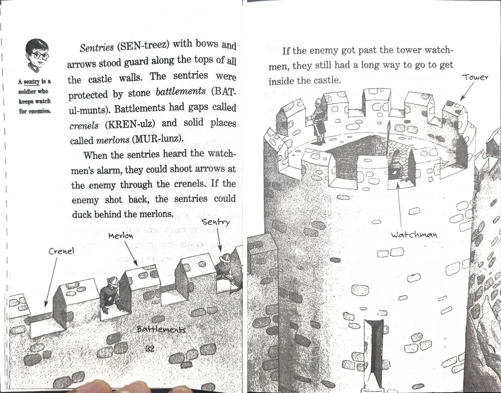
E14If the enemy got past the tower watchmen, they still had a long way to go to get inside the castle.
F15First they had to go through the barbican (BAR-bih-kon). 16The barbican was a walled passage that led to the castle gate. 17There were big doors on each end. 18If the enemy tried to sneak into the castle, guards could close the doors. 19The enemy would be trapped!
G20If the enemy got through the barbican, they then had to cross the moat (MOTE). 21The moat was a deep, wide ditch that ran all the way around the outside of the castle walls. 22The moat was usually filled with water.
H23Annie: Yikes! 24Some moats may even have had crocodiles!
원본 펼침면 확인 · 034–035쪽
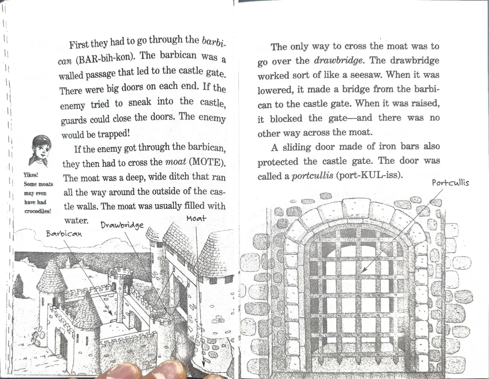
I25The only way to cross the moat was to go over the drawbridge. 26The drawbridge worked sort of like a seesaw. 27When it was lowered, it made a bridge from the barbican to the castle gate. 28When it was raised, it blocked the gate—and there was no other way across the moat.
J29A sliding door made of iron bars also protected the castle gate. 30The door was called a portcullis (port-KUL-iss).
K31Behind the portcullis was a pair of big wooden doors. 32The doors were very thick. 33They had strong bolts. 34When guards at the castle gate heard the alarm, they raised the drawbridge. 35They lowered the portcullis. 36They shut the doors behind the portcullis. 37They locked the bolts on the doors.
L38It was almost impossible for the enemy to get inside the castle!
원본 펼침면 확인 · 036–037쪽
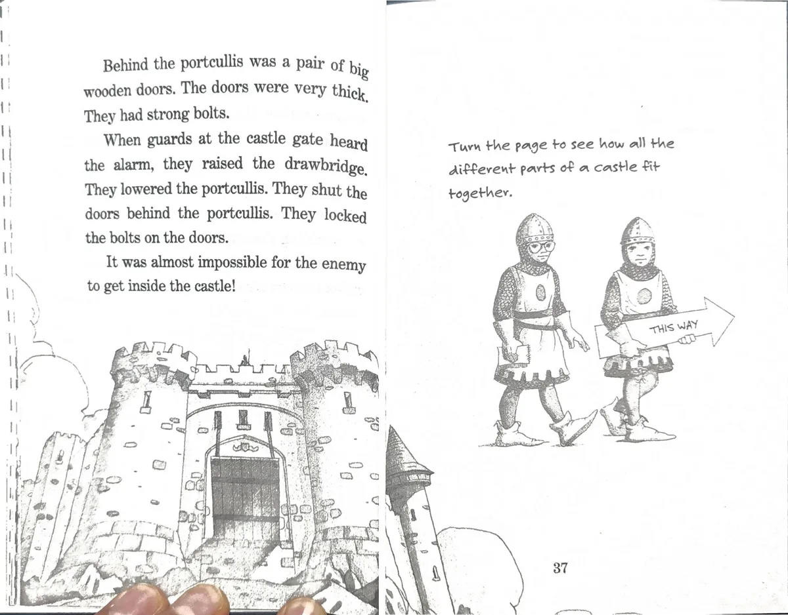
M39Jack and Annie: Turn the page to see how all the different parts of a castle fit together.
N40Jack: A castle wasn’t just the building where the lord lived with his family. 41It was everything that was built to protect the lord and his land.
Castle Life
A1A castle wasn’t built just to protect people from their enemies. 2For the lord and lady of the manor, the castle was also home. 3A lord and lady usually married at a very young age. 4Most boys and girls from noble families were married by the time they were fourteen years old.
B5Noble marriages were often arranged by the couple’s parents. 6Sometimes the bride and groom didn’t even meet each other until their wedding day! 7Once they were married, the lord and lady each had many duties.
C8The lord was in charge of the whole manor. 9He was a general, police chief, and judge all rolled into one. 10He protected the people who lived on the manor. 11He also collected taxes from them. 12He settled arguments and punished criminals.
원본 펼침면 확인 · 042–043쪽
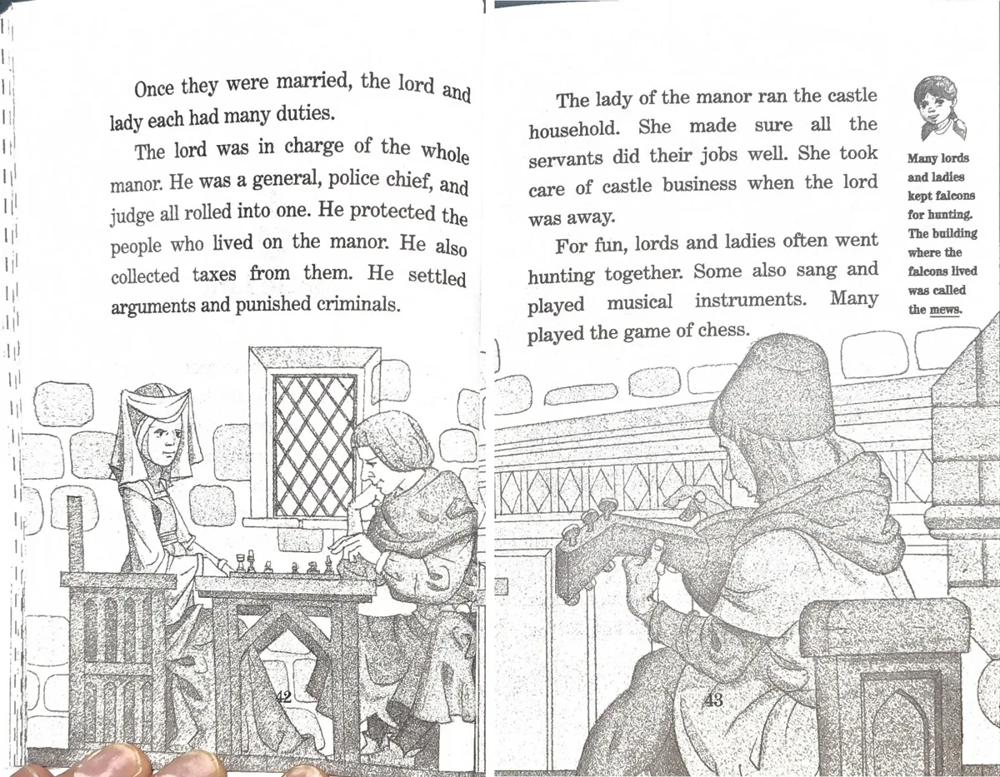
D13The lady of the manor ran the castle household. 14She made sure all the servants did their jobs well. 15She took care of castle business when the lord was away.
E16For fun, lords and ladies often went hunting together. 17Some also sang and played musical instruments. 18Many played the game of chess.
F19Annie: Many lords and ladies kept falcons for hunting. 20The building where the falcons lived was called the mews.
G21The lord and lady’s children were usually sent to live in other castles when they were about seven years old. 22There they learned manners and school lessons. 23It was feared their parents would spoil them if they stayed at home.
H24Hundreds of servants lived in a castle. 25Their job was to keep the lord and lady as
원본 펼침면 확인 · 044–045쪽
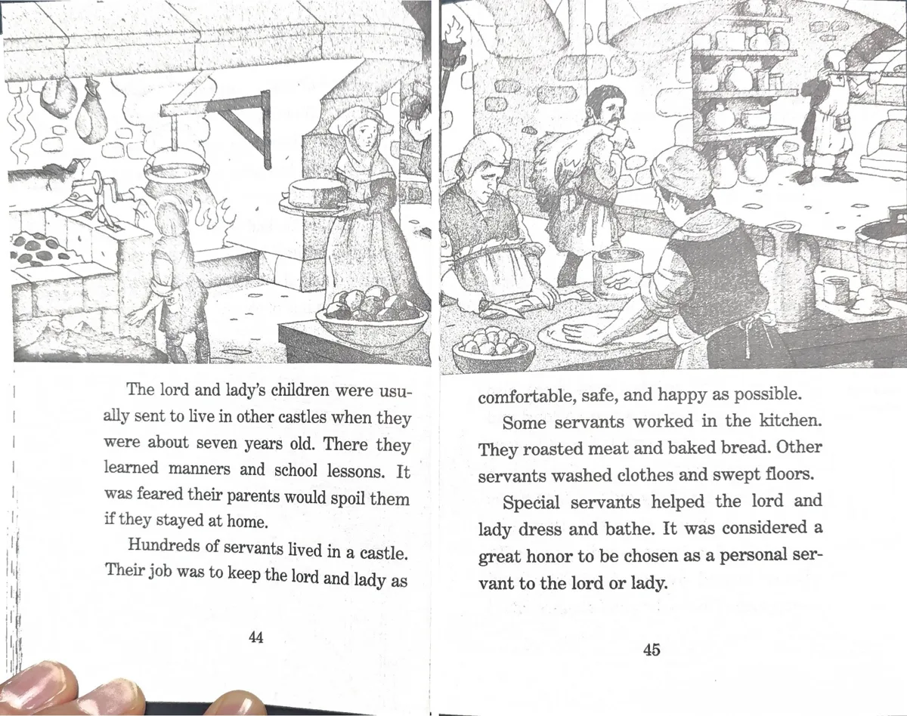
I26comfortable, safe, and happy as possible. 27Some servants worked in the kitchen. 28They roasted meat and baked bread. 29Other servants washed clothes and swept floors. 30Special servants helped the lord and lady dress and bathe. 31It was considered a great honor to be chosen as a personal servant to the lord or lady. 32Lords and ladies often dressed in very fancy clothes. 33Ladies almost always wore long dresses. 34Married women were supposed to keep their hair covered at all times. 35A lady’s headdress could be huge!
J36Lords usually wore hose made of wool and shirts made of linen. 37They often wore tunics (TOO-nicks) over their shirts. 38They sometimes wore floppy hats with very long tails. 39Shoes with pointed toes were also popular. 40Some shoes were so long and pointed that they were twice as long as the wearer’s feet!
K41The lord and lady did not take baths very often. 42When they did, their servants filled a giant wooden tub with water heated over a fire. 43They used soap made from ashes and sheep’s fat.
L44Jack: A tunic is a loose-fitting piece of clothing usually worn over a shirt or blouse.
원본 펼침면 확인 · 046–047쪽
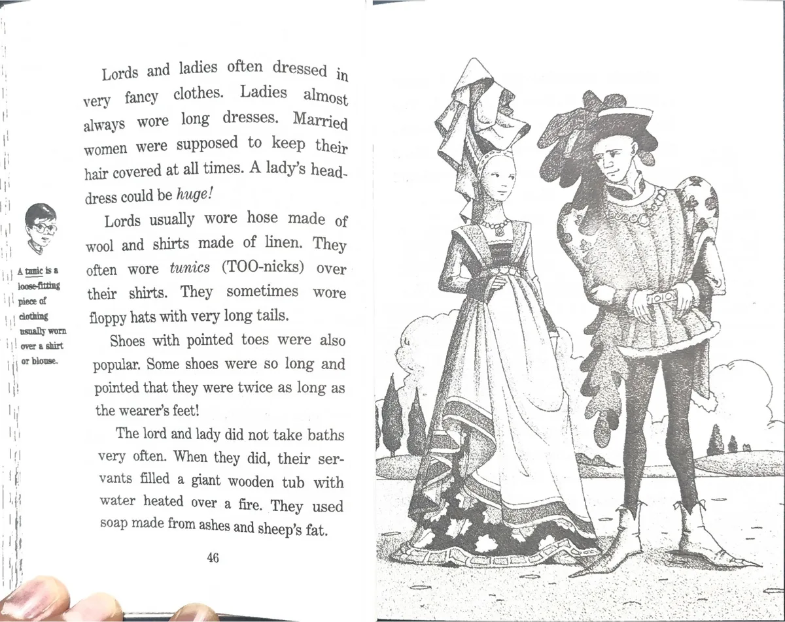
M45The lord and lady slept in a big bed in the master bedroom of the castle. 46The bed was usually very fancy, with curtains all around it. 47When the lord visited other castles, he often took his bed and his bathtub with him!
N48The Great Hall
O49The Great Hall was the biggest room in the castle. 50It was where the lord settled arguments among the people who lived on the manor. 51It was where he met with
P52Annie: Beds were high to keep mice out.
원본 펼침면 확인 · 048–049쪽
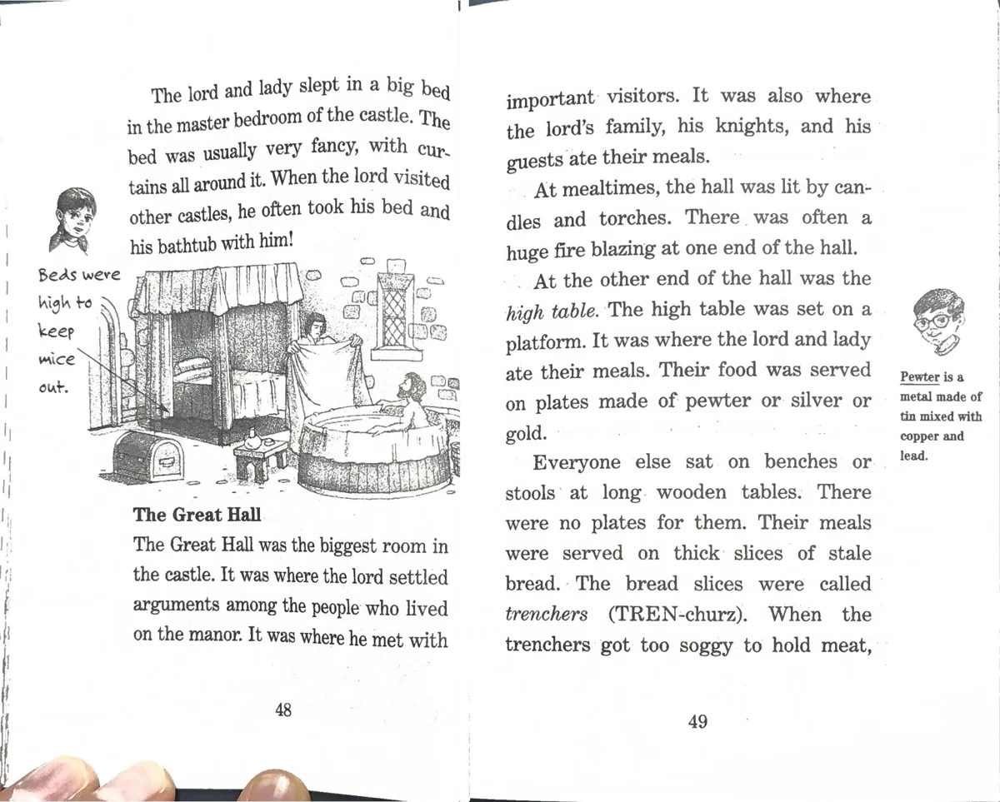
Q53important visitors. 54It was also where the lord’s family, his knights, and his guests ate their meals.
R55At mealtimes, the hall was lit by candles and torches. 56There was often a huge fire blazing at one end of the hall.
S57At the other end of the hall was the high table. 58The high table was set on a platform. 59It was where the lord and lady ate their meals. 60Their food was served on plates made of pewter or silver or gold.
T61Everyone else sat on benches or stools at long wooden tables. 62There were no plates for them. 63Their meals were served on thick slices of stale bread. 64The bread slices were called trenchers (TREN-churz). 65When the trenchers got too soggy to hold meat,
U66Jack: Pewter is a metal made of tin mixed with copper and lead.
V67they were given to beggars outside the castle. 68Table manners were a little different than they are today. 69There were no forks, so it was all right for people to eat with their fingers. 70Several people might drink from the same cup. 71They could throw their scraps on the floor. 72It was even okay to spit on the floor!
W73By the end of a meal, the floor of the great hall was really dirty. 74It was covered with scraps of food, bones, and even droppings from animals. 75Servants sometimes spread flowers and dried weeds on the floor to cover the bad smells.
X76On holidays and other special occasions, the castle had celebrations called feasts (FEESTS). 77On feast days, the Great Hall was filled with music. 78Singers
원본 펼침면 확인 · 050–051쪽
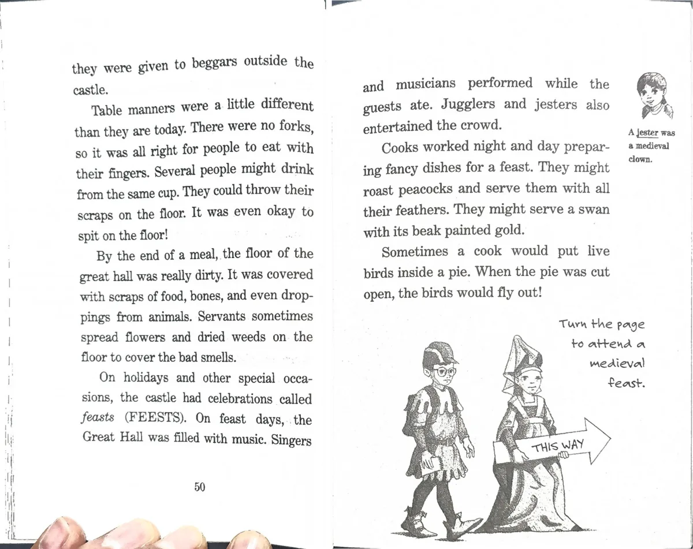
Y79and musicians performed while the guests ate. 80Jugglers and jesters also entertained the crowd. 81Cooks worked night and day preparing fancy dishes for a feast. 82They might roast peacocks and serve them with all their feathers. 83They might serve a swan with its beak painted gold.
Z84Sometimes a cook would put live birds inside a pie. 85When the pie was cut open, the birds would fly out!
AA86Annie: A jester was a medieval clown.
AB87Jack and Annie: Turn the page to attend a medieval feast.
Festivals and Fairs
A1Some of the most exciting events on the manor were religious festivals and trade fairs. 2Religious festivals took place on holidays, such as Christmas and Easter. 3There were often feasts in the Great Hall. 4The lord gave most of the workers on the manor the day off. 5Townspeople sometimes performed in the villages. 6They acted out stories from the Bible.
B7Annie: The word holiday comes from the words holy + day.
C8Religious worship was also an important part of everyday life during the Middle Ages.
원본 펼침면 확인 · 056–057쪽
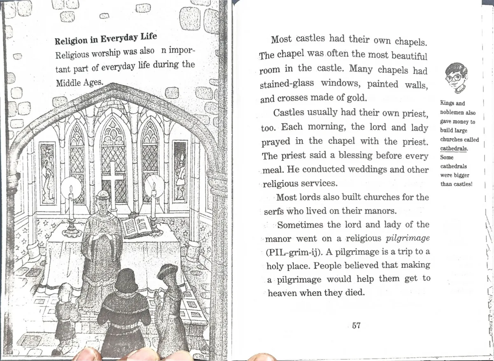
D9Most castles had their own chapels. 10The chapel was often the most beautiful room in the castle. 11Many chapels had stained-glass windows, painted walls, and crosses made of gold. 12Castles usually had their own priest, too. 13Each morning, the lord and lady prayed in the chapel with the priest. 14The priest said a blessing before every meal. 15He conducted weddings and other religious services.
E16Most lords also built churches for the serfs who lived on their manors. 17Sometimes the lord and lady of the manor went on a religious pilgrimage (PIL-grim-ij). 18A pilgrimage is a trip to a holy place. 19People believed that making a pilgrimage would help them get to heaven when they died.
F20Jack: Kings and noblemen also gave money to build large churches called cathedrals. 21Some cathedrals were bigger than castles!
G22Of course, not all gatherings on the manor were religious. 23There were also market days and trade fairs. 24Market days usually happened once a week. 25On market days, farmers and merchants set up stalls outside the castle gate. 26People on the manor came to buy food, clothes, and other goods.
H27Trade fairs happened once or twice a year. 28At trade fairs, merchants from around the world came and set up tents. 29They sold everything, from candles and soaps to fancy daggers and swords. 30People from nearby villages sold pies and cakes and hot wine. 31Minstrels walked through the crowd, singing songs. 32Their songs often told stories of heroes and their adventures. 33There
I34Jack: A merchant is a person who buys and sells goods.
J35Annie: A minstrel was a medieval singer and musician.
원본 펼침면 확인 · 058–059쪽
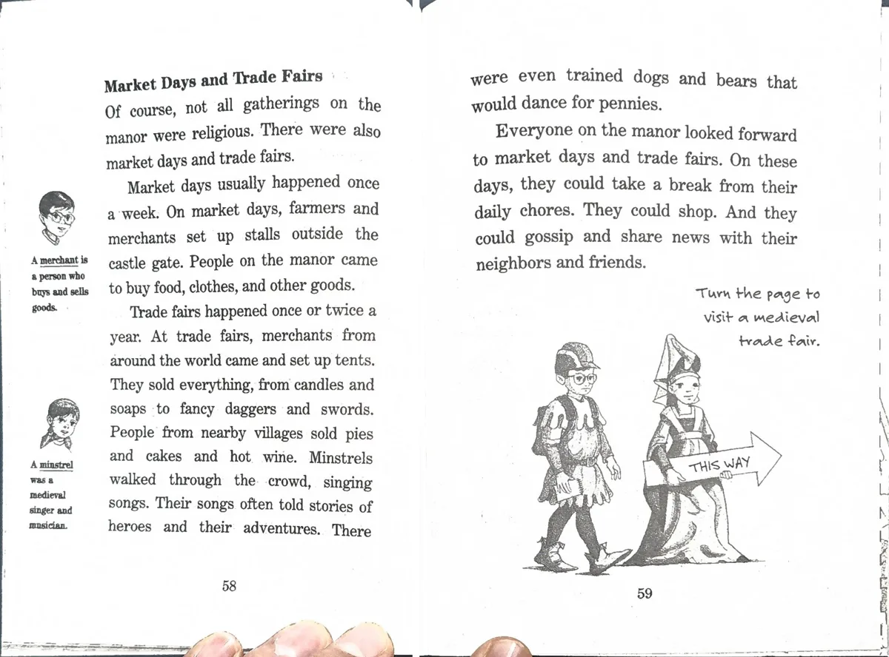
K36were even trained dogs and bears that would dance for pennies. 37Everyone on the manor looked forward to market days and trade fairs. 38On these days, they could take a break from their daily chores. 39They could shop. 40And they could gossip and share news with their neighbors and friends.
L41Jack and Annie: Turn the page to visit a medieval trade fair.
Knights
A1Medieval minstrels often sang songs that told stories of heroes and their adventures. 2The heroes were all very brave and bold and fair. 3The heroes were knights. 4Knights had different names in different countries. 5In Spain, they were called caballeros (kab-uh-YER-os). 6In Germany, they were called Ritters (RIT-urz). 7In France, they were called chevaliers (shuh-VAL-yayz).
B8All these words mean the same thing: “horsemen.” 9Knights were soldiers who fought on horseback. 10Becoming a Knight
C11It took years of training to become a knight. 12It also took a lot of money. 13Horses and armor were very expensive. 14So most knights came from wealthy, noble families. 15A boy who wanted to be a knight started his training when he was about seven years old. 16At that time, his parents sent him to live in another lord’s castle. 17He became a page.
D18A page served the lord’s family their meals. 19He learned manners. 20He learned battle skills by fighting with wooden swords and riding on wooden horses.
E21Annie: Not fair! 22Only boys could become knights.
원본 펼침면 확인 · 064–065쪽
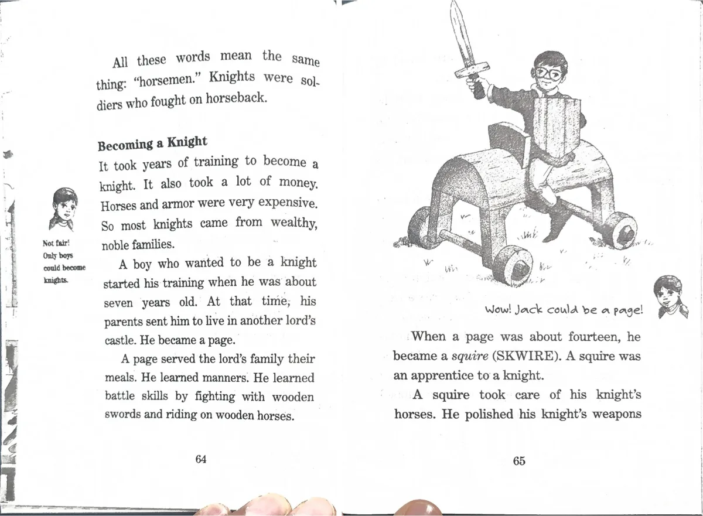
F23When a page was about fourteen, he became a squire (SKWIRE). 24A squire was an apprentice to a knight. 25A squire took care of his knight’s horses. 26He polished his knight’s weapons
G27Annie: Wow! 28Jack could be a page!
H29and armor. 30If a knight were called to war, his squire went with him. 31A squire had to be ready to fight beside his knight on the battlefield. 32So he practiced fighting with real swords and other weapons. 33Most important, he practiced his horsemanship.
I34A squire had to learn to ride a horse without using his hands. 35On the battlefield, he would need both hands to hold his weapons and shield. 36Most squires became knights at about age twenty-one. 37They were usually knighted at a dubbing ceremony.
J38A squire could be dubbed, or knighted, by his father or by the knight who trained him. 39A squire from a very important family might even be dubbed by the king himself!
K40Jack: Horsemanship means “horse-riding skill.”
원본 펼침면 확인 · 066–067쪽
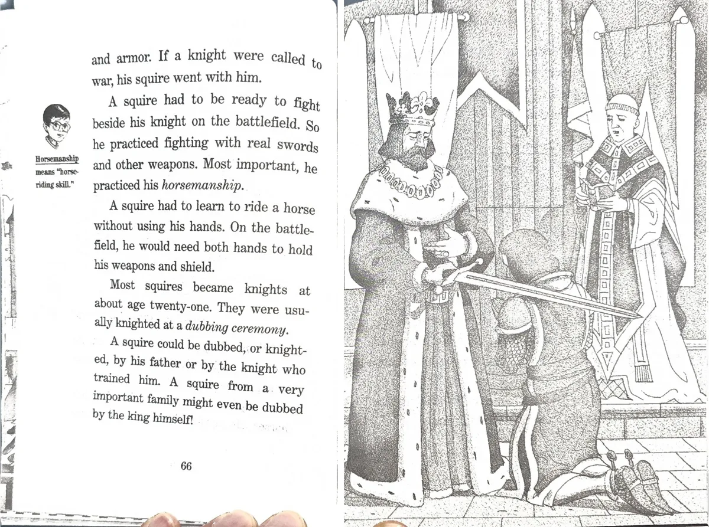
L41At the dubbing ceremony, the new knight promised to be brave and loyal. 42He swore to protect his lord, his king, and his church. 43The Code of Chivalry
M44In the later Middle Ages, knights also promised to have good manners. 45They had to be fair to all people. 46They had to protect the weak. 47They had to be generous. 48They had to honor and respect women.
N49These rules came to be called the Code of Chivalry (SHIV-ul-ree).
O50Jack: Chivalry comes from the French word cheval, which means “horse.”
원본 펼침면 확인 · 068–069쪽
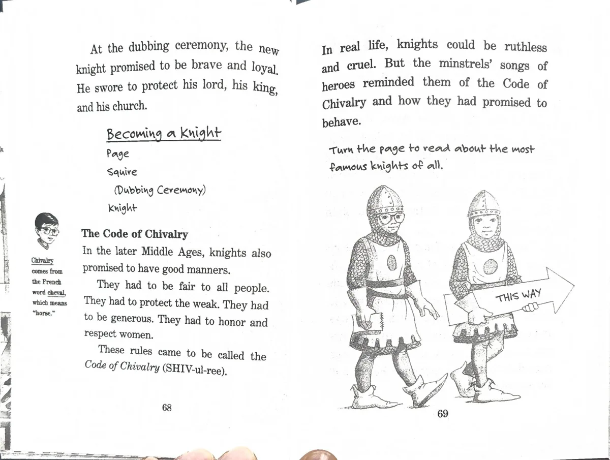
P51In real life, knights could be ruthless and cruel. 52But the minstrels’ songs of heroes reminded them of the Code of Chivalry and how they had promised to behave.
Q53Jack and Annie: Turn the page to read about the most famous knights of all.
R54During the Middle Ages, the most popular stories about knights were tales of King Arthur and his kingdom of Camelot. 55They were make-believe stories. 56But they may have been based on a real king who lived in Britain in the sixth century.
S57One of the most famous stories about King Arthur is that of the Sword in the Stone. 58In the story, the people of Britain find a stone with a sword thrust into it. 59Writing on the stone says: WHOEVER CAN PULL THE SWORD FROM THIS STONE IS THE TRUE KING OF BRITAIN. 60A young page named Arthur is the only one who can pull the sword out of the stone.
원본 펼침면 확인 · 070–071쪽
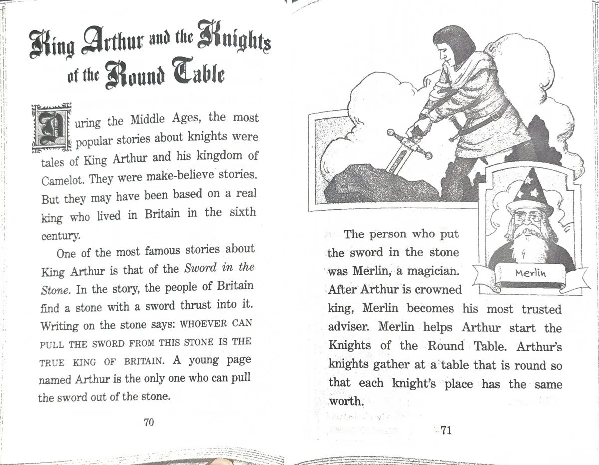
T61The person who put the sword in the stone was Merlin, a magician. 62After Arthur is crowned king, Merlin becomes his most trusted adviser. 63Merlin helps Arthur start the Knights of the Round Table. 64Arthur’s knights gather at a table that is round so that each knight’s place has the same worth.
U65Two of the most famous Knights of the Round Table are Sir Lancelot (LANS-uh-lot) and Sir Galahad (GAL-uh-had). 66They both lived by the highest ideals of the Code of Chivalry.
원본 펼침면 확인 · 072–073쪽
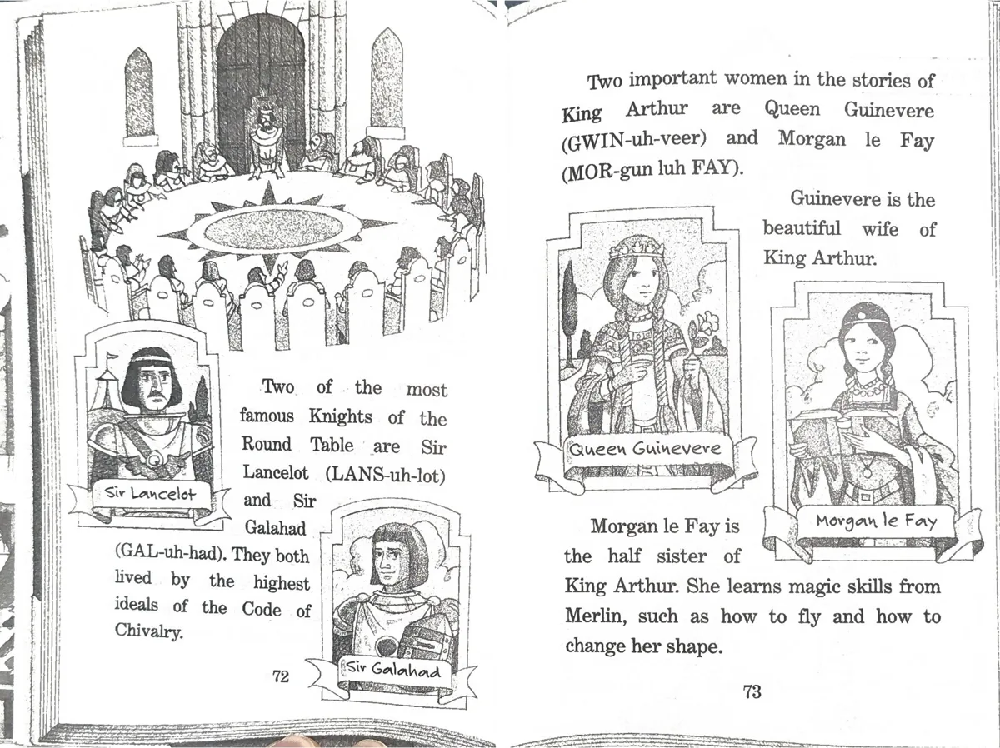
V67Two important women in the stories of King Arthur are Queen Guinevere (GWIN-uh-veer) and Morgan le Fay (MOR-gun luh FAY). 68Guinevere is the beautiful wife of King Arthur. 69Morgan le Fay is the half sister of King Arthur. 70She learns magic skills from Merlin, such as how to fly and how to change her shape.
Armor
A1As part of his dubbing ceremony, a new knight was often given a suit of armor. 2Armor is metal covering that protected a knight from his enemy’s weapons. 3Armor was heavy. 4It was hot. 5It was hard to put on and take off. 6But it was the best protection a knight could have when he went into battle.
B7The earliest armor was made of small metal rings all linked together. 8The linked 9rings were called mail. 10Mail was first popular in the eleventh century.
C11Knights going into battle wore a mail coat called a hauberk (HO-burk). 12A hauberk was good protection against the sharp edges of a sword. 13But a knight could be stabbed through the mail rings with a thin dagger.
D14Jack: This kind of armor is often called chain mail because the rings are linked like a chain.
E15Annie: Hauberks were so heavy that knights who wore them had to wear padded underwear!
원본 펼침면 확인 · 076–077쪽
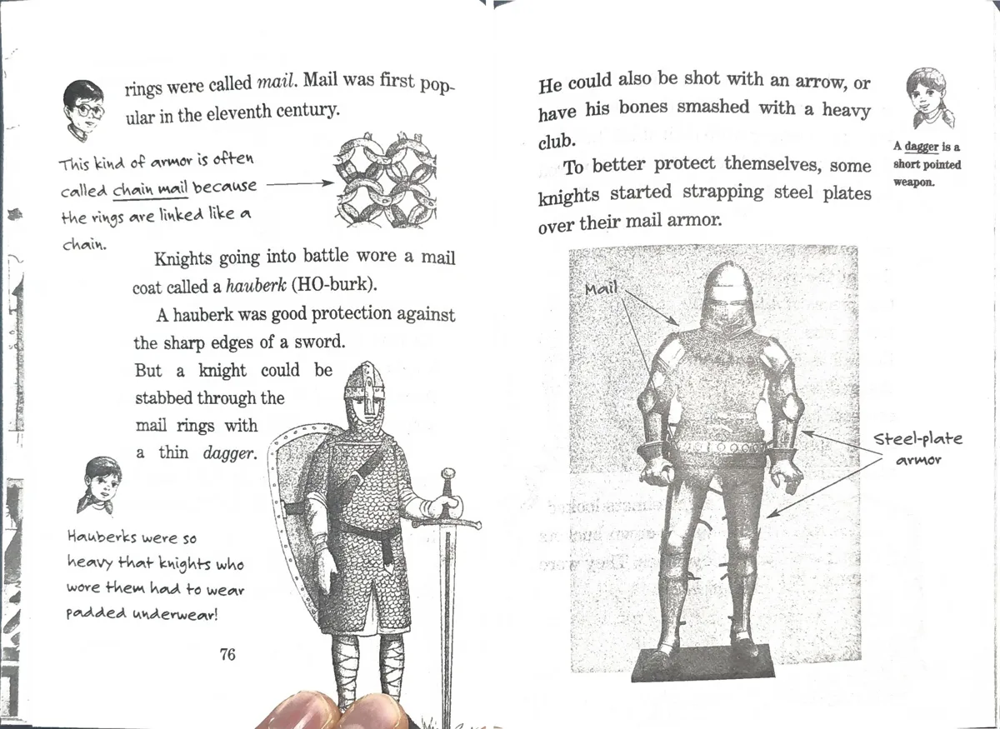
F16He could also be shot with an arrow, or have his bones smashed with a heavy club. 17To better protect themselves, some knights started strapping steel plates over their mail armor.
G18Annie: A dagger is a short pointed weapon.
H19Steel plates were much better protection than mail rings. 20By the 1400s, most knights no longer wore mail at all. 21Instead, they wore steel-plate armor that covered them from head to toe. 22Helmets
I23One of the most important pieces of a knight’s armor was his helmet. 24Like all armor, helmets changed over time. 25The earliest helmets were simply steel hats with nose guards. 26Later helmets looked like upside-down buckets with eyeholes. 27They were called helms.
원본 펼침면 확인 · 078–079쪽
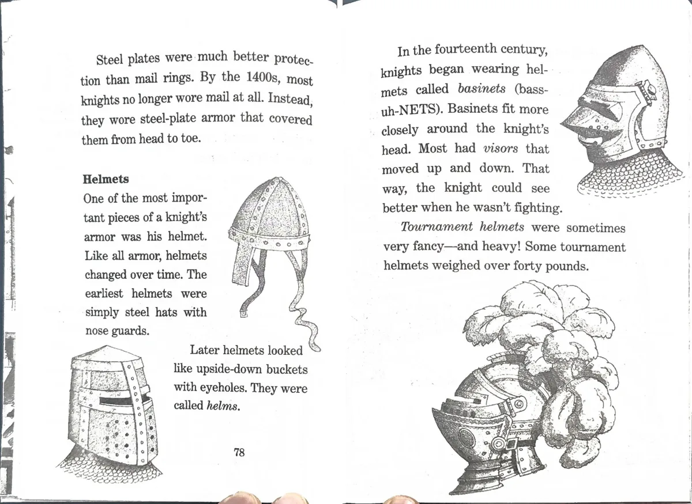
J28In the fourteenth century, knights began wearing helmets called basinets (bass-uh-NETS). 29Basinets fit more closely around the knight’s head. 30Most had visors that moved up and down. 31That way, the knight could see better when he wasn’t fighting.
K32Tournament helmets were sometimes very fancy—and heavy! 33Some tournament helmets weighed over forty pounds.
L34There were so many pieces in a full suit of steel armor that it could take over an hour for a knight to get dressed. 35Knights in full armor even wore steel gloves and steel shoes!
원본 펼침면 확인 · 080–081쪽
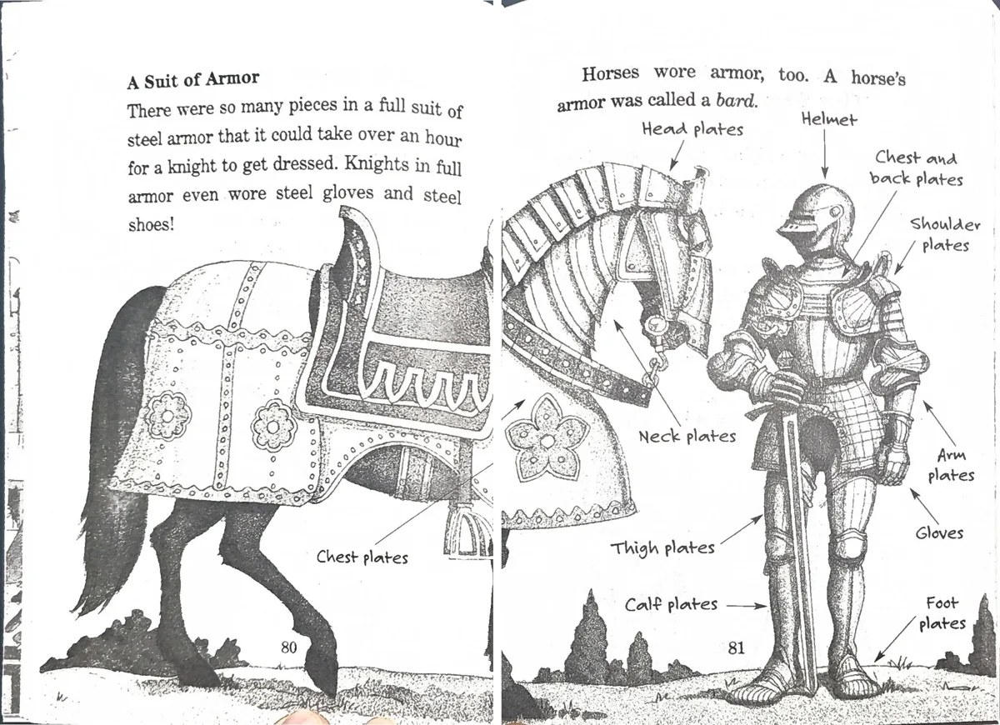
M36Horses wore armor, too. 37A horse’s armor was called a bard.
N38Helmets hid knights’ faces. 39So knights wore big badges to tell each other apart on the battlefield. 40The badges were called coats of arms.
O41The first knights could choose anything they wanted for their coats of arms. 42A knight might pick a lion to show bravery, or a tree to show his strength.
원본 펼침면 확인 · 082–083쪽
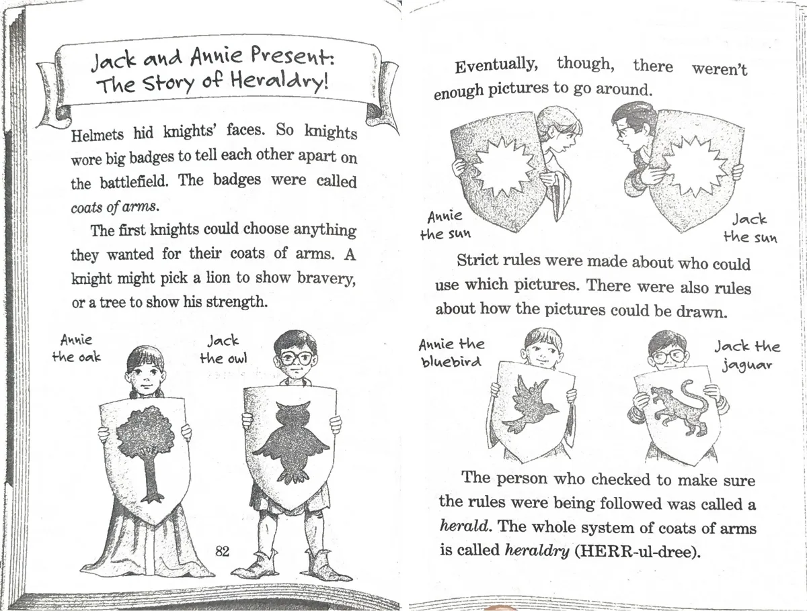
P43Eventually, though, there weren’t enough pictures to go around.
Q44Strict rules were made about who could use which pictures. 45There were also rules about how the pictures could be drawn.
R46The person who checked to make sure the rules were being followed was called a herald. 47The whole system of coats of arms is called heraldry (HERR-ul-dree).
Weapons
A1A knight carried many weapons into battle. 2His most important weapon was his sword. 3Early swords were flat and wide. 4They had two sharp edges. 5They were called slashing swords. 6Armor did a good job of protecting knights from the sharp edges of slashing swords. 7So sword makers started making swords that were longer and more pointed than slashing swords. 8These swords were 9called thrusting swords. 10The point of a thrusting sword could fit between the steel plates or through the mail rings of armor.
B11In the later Middle Ages, some knights carried swords that were so long and heavy they couldn’t hold them in one hand. 12These were called hand-and-a-half swords. 13Hand-and-a-half swords could be nearly as tall as the knights who carried them!
원본 펼침면 확인 · 086–087쪽
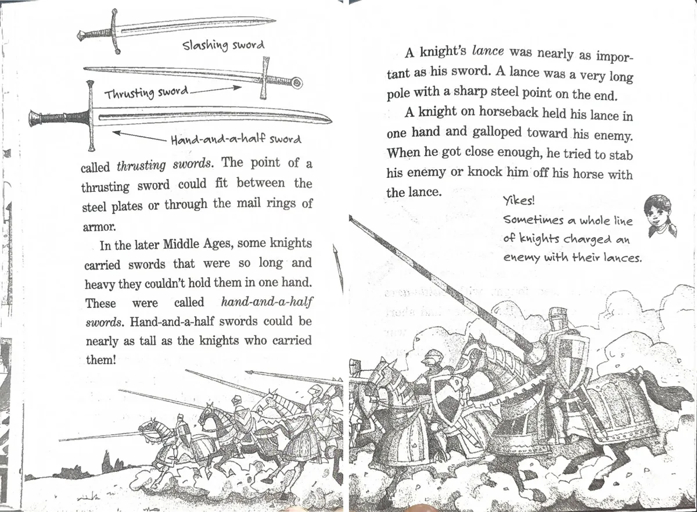
C14A knight’s lance was nearly as important as his sword. 15A lance was a very long pole with a sharp steel point on the end. 16A knight on horseback held his lance in one hand and galloped toward his enemy. 17When he got close enough, he tried to stab his enemy or knock him off his horse with the lance.
D18Annie: Yikes! 19Sometimes a whole line of knights charged an enemy with their lances.
E20Knights had plenty of other weapons, too. 21A flail was an iron ball and chain attached to a handle. 22The ball was covered with sharp spikes. 23A mace was a big club with a heavy steel head. 24A blow from a flail or a mace could crush a knight’s helmet—and the knight’s head inside!
F25Knights also fought with battle-axes and war hammers. 26Battle-axes had short handles and broad, sharp blades. 27A war hammer was like a big hammer, a club, and a knife all in one.
원본 펼침면 확인 · 088–089쪽
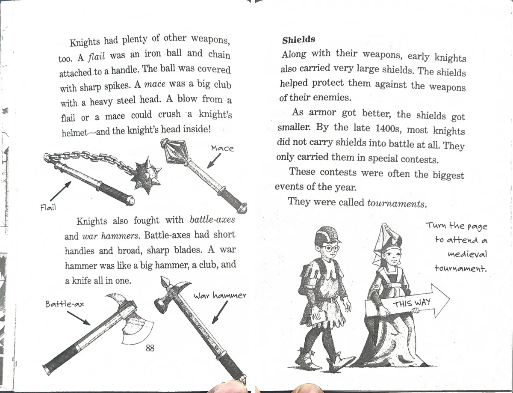
G28Along with their weapons, early knights also carried very large shields. 29The shields helped protect them against the weapons of their enemies. 30As armor got better, the shields got smaller. 31By the late 1400s, most knights did not carry shields into battle at all. 32They only carried them in special contests.
H33These contests were often the biggest events of the year. 34They were called tournaments.
I35Jack and Annie: Turn the page to attend a medieval tournament.
J36Tournaments began as practice for war. 37Knights fought each other in big teams. 38Their battles were called melees (MAY-layz). 39Melees were very confusing. 40There were
원본 펼침면 확인 · 090–091쪽
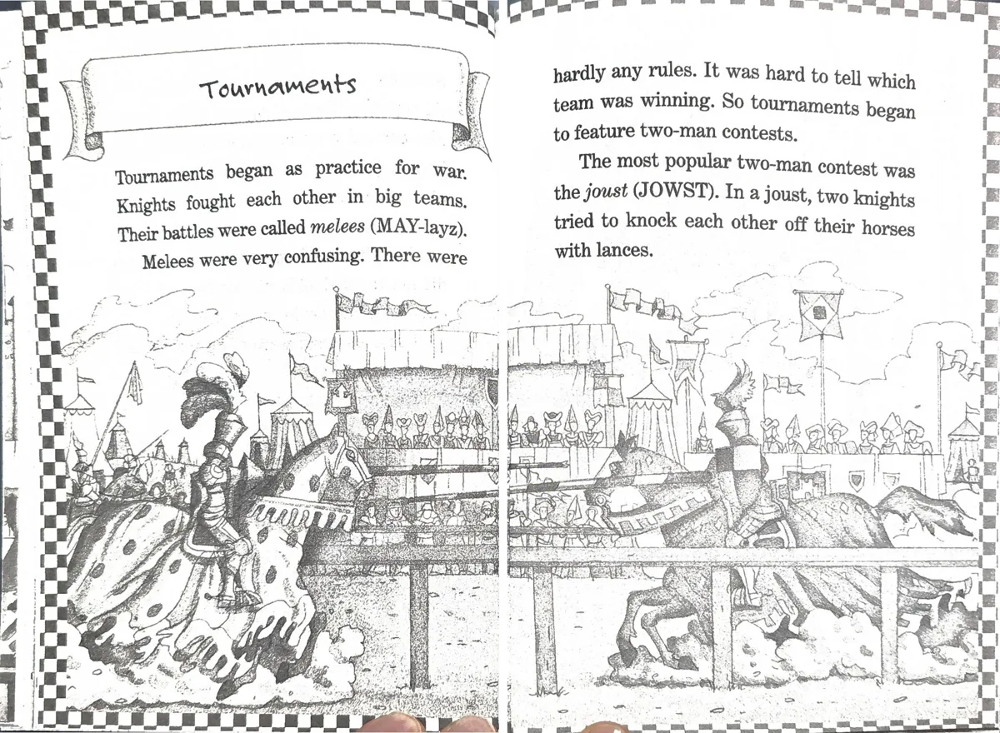
K41hardly any rules. 42It was hard to tell which team was winning. 43So tournaments began to feature two-man contests. 44The most popular two-man contest was the joust (JOWST). 45In a joust, two knights tried to knock each other off their horses with lances.
Battles and Sieges
A1At tournaments, knights fought for glory and prizes. 2When they went to war, they fought for their lives. 3Knights went to war for many reasons. 4Sometimes they fought to help their king get more land for his kingdom.
B5Sometimes they fought to win back land that had been taken from their lord. 6Sometimes they traveled thousands of miles to fight wars for their church.
원본 펼침면 확인 · 092–093쪽
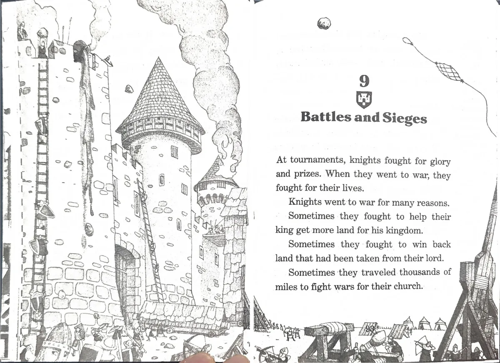